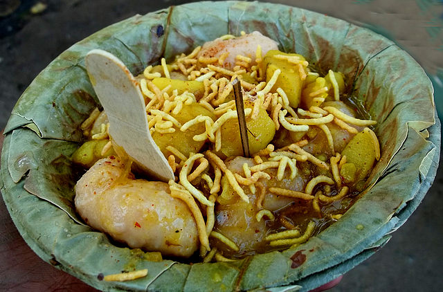

Dahibara

Description
Dahibara, also known as Dahi Vada, is a popular Indian street food and snack that originates from the state of Odisha.
It consists of deep-fried lentil dumplings soaked in seasoned yogurt and topped with various savory and tangy condiments.
Ingredients
- Urad Dal (Split Black Gram)
- Yogurt
- Spices:
- Salt
- Roasted cumin powder
- Black salt
- Red chili powder
- Chaat masala
- Toppings:
- Finely chopped onions
- Cilantro (Coriander) leaves
- Sev (Crispy chickpea flour noodles)
- Grated coconut
- Pomegranate seeds (optional)
- Chutneys:
- Tamarind chutney
- Green chutney
Steps
- Prepare the Lentil Batter:
- Soak Urad Dal (Split Black Gram) for several hours.
- Grind soaked dal into a smooth paste with ginger and green chilies.
- Ferment the batter for a few hours.
- Fry the Dumplings:
- Heat oil in a deep frying pan.
- Take small portions of the lentil batter and deep-fry until golden brown.
- Remove from oil and drain excess oil on paper towels.
- Soak in Yogurt:
- Whisk yogurt with water, salt, and spices to create a seasoned yogurt mixture.
- Soak the fried dumplings (vadas) in the yogurt mixture.
- Seasoning and Garnish:
- Season the soaked Dahibaras with roasted cumin powder, black salt, red chili powder, and chaat masala.
- Garnish with chopped onions, cilantro leaves, sev, grated coconut, and optional pomegranate seeds.
- Serve:
- Drizzle with tamarind chutney and green chutney.
- Serve chilled and enjoy as a delicious snack.